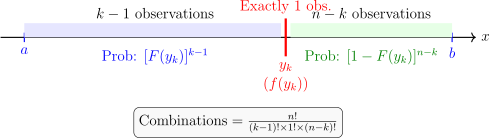

1.2 Distribution of Order Statistics
Suppose \(X_1, X_2, \dots , X_n\) is a random sample from a population. When we arrange these observations in increasing order of magnitude, we obtain the Order Statistics: \[ X_{(1)} \leq X_{(2)} \leq \dots \leq X_{(n)} \] We often denote these as \(Y_1, Y_2, \dots , Y_n\) to distinguish them from the raw sample.
- \(Y_1 = \min (X_1, \dots , X_n)\) is the first (smallest) order statistic.
- \(Y_n = \max (X_1, \dots , X_n)\) is the largest order statistic.
- \(Y_{(n+1)/2}\) (for odd \(n\)) represents the sample median.
1.2.1 The Joint PDF
Theorem 1.2.1. If \(X_1, X_2, \ldots \, , X_n\) is a random sample from a population with continuous PDF \(f(x)\), then the joint PDF of the order statistics \(Y1, Y_2, \ldots , \, Y_n\) is given by \[ f(y_1, y_2, \dots , y_n) = n! \prod _{i=1}^n f(y_i), \quad \quad -\infty < y_1 < y_2 < \dots < y_n < \infty \] The \(n!\) factor accounts for the fact that any of the \(n!\) permutations of the original sample could have resulted in this specific ordered set.
Example 1.2.2. Suppose that \(X_1, X_2, X_3\) represent a random sample of size 3 from an Exponential population with PDF: \[ f(x) = e^{-x}, \quad x > 0 \] Find:
- (i).
- The joint PDF of the order statistics \(Y_1, Y_2, Y_3\).
Solution. Using the theorem \(f(y_1, y_2, y_3) = n! \prod f(y_i)\): \begin {align*} f(y_1, y_2, y_3) &= 3! \, f(y_1) f(y_2) f(y_3)\\ &= 6 (e^{-y_1})(e^{-y_2})(e^{-y_3})\\ &= 6 e^{-(y_1 + y_2 + y_3)}\, , \quad 0 < y_1 < y_2 < y_3 < \infty \end {align*} □
- (ii).
- The marginal PDF of \(Y_1\) (the minimum).
Solution. To find \(f(y_1)\), we integrate out \(y_3\) (from \(y_2\) to \(\infty \)) and \(y_2\) (from \(y_1\) to \(\infty \)): \begin {align*} f(y_1) &= \int _{y_1}^{\infty } \int _{y_2}^{\infty } 6e^{-y_1}e^{-y_2}e^{-y_3} \, dy_3 \, dy_2\\ &= 6e^{-y_1} \int _{y_1}^{\infty } e^{-y_2} \left [ -e^{-y_3} \right ]_{y_2}^{\infty } \, dy_2\\ &= 6e^{-y_1} \int _{y_1}^{\infty } e^{-y_2} (e^{-y_2}) \, dy_2\\ & = 6e^{-y_1} \int _{y_1}^{\infty } e^{-2y_2}\, dy_2\\ &= 6e^{-y_1} \left [ -\frac {1}{2}e^{-2y_2} \right ]_{y_1}^{\infty }\\ & = 6e^{-y_1} \left ( \frac {1}{2}e^{-2y_1} \right )\\ & = 3e^{-3y_1}, \quad y_1 > 0. \end {align*} □
- (iii).
- The marginal PDF of \(Y_3\) (the maximum).
Solution. To find \(f(y_3)\), we integrate out \(y_1\) (from \(0\) to \(y_2\)) and \(y_2\) (from \(0\) to \(y_3\)): \begin {align*} f(y_3) &= \int _{0}^{y_3} \int _{0}^{y_2} 6e^{-y_1}e^{-y_2}e^{-y_3}\, dy_1\, dy_2\\ &= 6e^{-y_3} \int _{0}^{y_3} e^{-y_2} \left [ -e^{-y_1} \right ]_{0}^{y_2}\, dy_2\\ &= 6e^{-y_3} \int _{0}^{y_3} e^{-y_2} (1 - e^{-y_2})\, dy_2\\ & = 6e^{-y_3} \int _{0}^{y_3} (e^{-y_2} - e^{-2y_2})\, dy_2\\ &= 6e^{-y_3} \left [ -e^{-y_2} + \frac {1}{2}e^{-2y_2} \right ]_{0}^{y_3}\\ & = 6e^{-y_3} \left ( -e^{-y_3} + \frac {1}{2}e^{-2y_3} + 1 - \frac {1}{2} \right )\\ &= 6e^{-y_3} \left ( \frac {1}{2} - e^{-y_3} + \frac {1}{2}e^{-2y_3} \right )\\ & = 3e^{-y_3} - 6e^{-2y_3} + 3e^{-3y_3}, \quad y_3 > 0. \end {align*} □
1.2.2 Derivation of Extremes: Minimum and Maximum
The distribution of the maximum and minimum are fundamental in areas like reliability theory and extreme value analysis.
Theorem 1.2.3. Suppose \(X_1, X_2, \dots , X_n\) are independent and identically distributed (i.i.d.) continuous random variables with PDF \(f_X(x)\) and CDF \(F_X(x)\). The PDF of the maximum \(Y = X_{(n)}\) and the minimum \(U = X_{(1)}\) are derived as follows:
Proof. 1. The Distribution of the Maximum (\(Y = X_{(n)}\)): The maximum value of a sample is less than or equal to \(y\) if and only if every individual observation is less than or equal to \(y\). \begin {align*} F_Y(y) &= P(Y \leq y) = P(X_1 \leq y, X_2 \leq y, \dots , X_n \leq y)\\ &= P(X_1 \leq y)P(X_2 \leq y)\dots P(X_n \leq y) \quad (\text {by independence})\\ & =\prod ^n_{i = 1}F_{X_i}(y)\\ & = [F_X(y)]^n \quad (\text {since i.i.d.}) \end {align*}
Differentiating with respect to \(y\) gives the PDF: \[ f_Y(y) = \frac {d}{dy} [F_X(y)]^n = n[F_X(y)]^{n-1} f_X(y) \] 2. The Distribution of the Minimum (\(U = X_{(1)}\)): The minimum is greater than \(u\) if and only if every individual observation is greater than \(u\). \begin {align*} F_U(u) &= P(U \leq u) = 1 - P(U > u)\\ &= 1 - P(X_1 > u, X_2 > u, \dots , X_n > u)\\ &= 1 - [P(X_1 > u)]^n \quad (\text {by independence and identical distribution})\\ &= 1 - [1 - F_X(u)]^n. \end {align*}
Differentiating with respect to \(u\): \[ f_U(u) = \frac {d}{du} (1 - [1 - F_X(u)]^n) = n[1 - F_X(u)]^{n-1} f_X(u) \] □
1.2.3 The \(k^{\text {th}}\) Order Statistic
Having derived the boundaries, we now present the general theorem for any \(k^{\text {th}}\) value in the ordered sequence.
Note 1.2.4. To understand the PDF of \(Y_k\), imagine a number line representing the support of our distribution. We pick a point \(y\). For \(Y_k\) to be exactly at \(y\), the \(n\) observations must fall into three distinct bins:
- 1.
- \(k-1\) observations must fall to the left of \(y\) (each with probability \(F(y)\)).
- 2.
- Exactly one observation must fall at the point \(y\) (density \(f(y)\)).
- 3.
- The remaining \(n-k\) observations must fall to the right of \(y\) (each with probability \(1-F(y)\)).

Theorem 1.2.5. Let \(X_1, X_2, \dots , X_n\) denote a random sample of size \(n\) from a continuous population with PDF \(f(x)\) supported on \((a, b)\). The PDF of the \(k^{\text {th}}\) order statistic \(Y_k\) is: \[ f(y_k) = \frac {n!}{(k - 1)!(n - k)!} [F_X(y_k)]^{k-1} [1 - F_X(y_k)]^{n - k} f(y_k) \] for \(a < y_k < b\), and zero otherwise.
Exercise 1.2.6. In Example 1.2.2, we derived the marginal PDFs for the minimum (\(Y_1\)) and the maximum (\(Y_3\)) of an Exponential sample size \(n=3\) using double integration.Now, use the Order Statistic Theorem formula to directly find the PDFs for:
- (i).
- The sample minimum, \(Y_1 = X_{(1)}\).
- (ii).
- The sample median, \(Y_2 = X_{(2)}\).
- (iii).
- The sample maximum, \(Y_3 = X_{(3)}\).
Verify that your results for \(Y_1\) and \(Y_3\) match the results obtained via integration in the previous example.
Theorem 1.2.7. For a random sample of size \(n\) from a discrete or continuous CDF, \(F_X(x)\), the marginal CDF of the \(k^{\text {th}}\) order statistics is given by \[F(y_k) = \sum ^n_{j = k}\binom {n}{j}\left [F_X(y_k)\right ]^j\left [1 - F_X(y_k)\right ]^{n-j}.\]
Example 1.2.8. Let \(X_1, X_2, X_3\) be a random sample from \(f(x) = 2x, \quad 0< x < 1\). Find
- (i).
- the CDF of \(Y_2 = X_{(2)}\)
Solution. \(f(x) = 2x, \quad 0 < x < 1\) \[F_X(x) = \begin {cases} 0, & x \leq 0\\ x^2, & 0 < x < 1\\ 1, & x\geq \end {cases}\]
\[F(y_k) = \sum ^n_{j = k}\binom {n}{j}\left [F_X(y_k)\right ]^j\left [1 - F_X(y_k)\right ]^{n-j}\] \begin {align*} F(y_2) & = \sum ^3_{j = 2}\binom {3}{j}\left (y^2_2\right )^j\left [1 - y^2_2\right ]^{3-j}\\ & = \binom {3}{2}\left (y^2_2\right )^2\left (1 - y^2_2\right )^1 + \binom {3}{3}\left (y^2_2\right )^3\left (1 - y^2_2\right )^0\\ & = 3y^4_2\left (1 - y^2_2\right ) + y^6_2\\ & = y^4_2\left (3 - 2y^2_2\right ). \end {align*}
Therefore \[F(y_2) = \begin {cases} 0, & y_2 \leq 0\\ y^4_2(3 - 2y^2_2), & 0 < y_2 < 1\\ 1, & y\geq 1 \end {cases}\] □
- (ii).
- the PDF of \(Y_2 = X_{(2)}\)
Solution. We have two pathways to find the PDF.
- Pathway A (Derivative of CDF): \[ f_{Y_2}(y) = \frac {d}{dy} F_{Y_2}(y) = \frac {d}{dy}(3y^4 - 2y^6) = 12y^3 - 12y^5 = 12y^3(1 - y^2) \]
- Pathway B (Direct Formula): Using \(n=3, k=2\): \[ f_{Y_2}(y) = \frac {3!}{1!1!} [y^2]^1 [1 - y^2]^1 (2y) = 6(y^2)(1 - y^2)(2y) = 12y^3(1 - y^2) \]
Both pathways confirm the same result for \(0 < y < 1\). □
1.2.4 Distribution of the Range
The Sample Range is defined as \(R = Y_n - Y_1\). It is a vital measure of dispersion in non-parametric statistics and quality control. While we will use the Jacobian method later to derive its exact PDF for any distribution, we can already state the Joint PDF of the Extremes (\(Y_1\) and \(Y_n\)) using the same ”multinomial logic” from our diagram:
Theorem 1.2.9. For a random sample of size \(n\), the joint PDF of \(Y_1\) and \(Y_n\) is: \[ f_{Y_1, Y_n}(y_1, y_n) = n(n-1) [F(y_n) - F(y_1)]^{n-2} f(y_1) f(y_n) \] for \(a < y_1 < y_n < b\).
Questions on this section
Stuck on something here? Ask below and it stays attached to this topic.